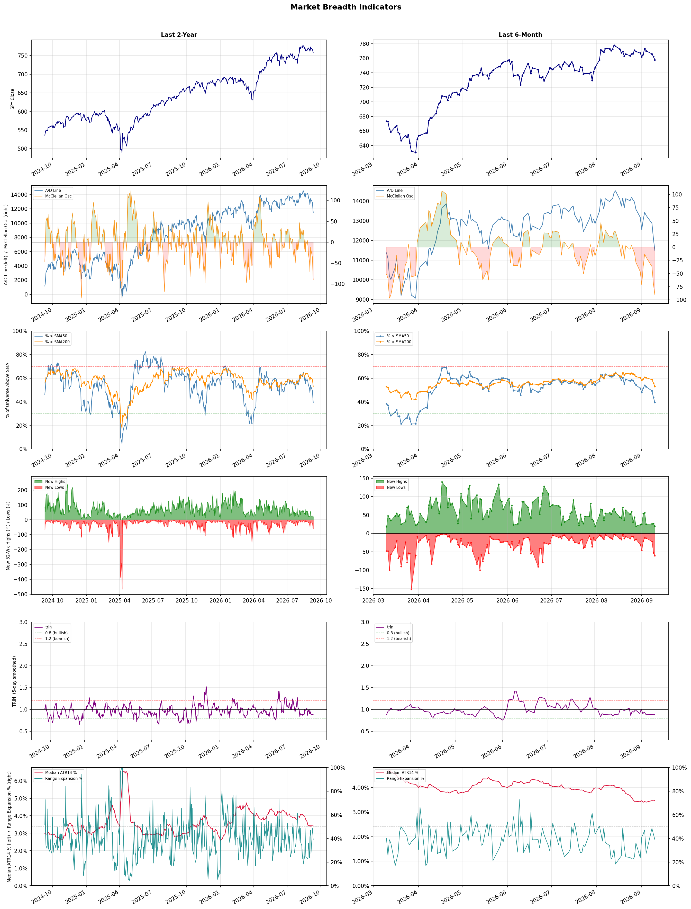

A daily market breadth and sector rotation report for active investors
| Item | Read |
|---|---|
| Regime | Defensive |
| Risk posture | Defensive |
| Universe | 1,325 stocks tracked · 20 new 52-week highs · 30 active swing setups |
| Breadth | only 39.4% of tracked stocks are above SMA50, new lows exceed new highs (61 vs 20), McClellan oscillator (breadth momentum) is negative at -90.5 |
| Leadership | Oil & Gas Refining & Marketing, Oil & Gas Integrated, and Oil & Gas E&P |
| Weakest groups | Footwear & Accessories, Solar, and Electrical Equipment & Parts |
Use this report to prioritize research and chart review; validate entries, stops, liquidity, earnings, and risk before acting.
| Item | Read |
|---|---|
| Primary read | Defensive regime with Defensive risk posture. |
| Research queue | UGP, DINO, VLO, PSX, CSAN |
| Leadership focus | Oil & Gas Refining & Marketing, Oil & Gas Integrated, and Oil & Gas E&P |
| Caution list | Footwear & Accessories, Solar, and Electrical Equipment & Parts |
| Review prompt | Check extension risk, chart location, fundamentals, valuation, and earnings before using any research row. |
| Item | Read |
|---|---|
| Primary read | 4 active risk warnings; use screen output as watchlist input only. |
| Bullish screens | PBR, SHEL, DHT, ET, FRO |
| Bearish screens | NAMS, SPRY, BN, GRAB, TU |
| Alerts / levels | Automated trigger, stop, ATR, liquidity, reward/risk, and event-risk levels are pending future enrichment. |
| Review prompt | Open the linked chart, define trigger and invalidation, then check liquidity and event risk independently. |
Risk Posture: Defensive — screen backdrop favors caution; require independent risk review before new exposure
Metric context: McClellan below -50 = elevated selling pressure; below -100 = washout territory. Range Expansion = share of stocks with daily range above their 20-day average. Signal Density = share of tracked names appearing in signal screens.
| Breadth Date | % > SMA50 | % > SMA200 | New Highs | New Lows | McClellan | Median Range | Avg Range | Median ATR14 | Range Expansion | Signal Density |
|---|---|---|---|---|---|---|---|---|---|---|
| 2026-09-10 | 39.4% | 53.0% | 20 | 61 | -90.5 | 2.9% | 3.3% | 3.5% | 39.0% | 14.8% |

Prior comparison date: September 9, 2026
| Metric | Prior | Current | Change |
|---|---|---|---|
| Regime | Defensive | Defensive | unchanged |
| Risk Posture | Defensive | Defensive | unchanged |
| % > SMA50 | 43.8% | 39.4% | -4.4 pts |
| % > SMA200 | 55.8% | 53.0% | -2.8 pts |
| New Highs | 25 | 20 | -5 |
| New Lows | 54 | 61 | -7 |
Top-10 industries entering: Steel. Top-10 industries leaving: Copper. New multi-signal long setups: DHT, ET, FRO, HPQ. New multi-signal short setups: BN, BROS, COO, LCID, LI, LULU.
| Status | Tickers | Read |
|---|---|---|
| Added | AU, BN, BROS, COO, DHT, ET, FRO, HPQ | New technical screen matches vs prior report. |
| Removed | ANF, AON, APA, APTV, CMPS, CVE, CVX, DELL | No longer present in today's technical screen matches. |
| Still Active | CPNG, GRAB, HDB, MPT, SSL, SYK, TU, VRRM | Appeared in both current and prior reports. |
| Promoted | none | Model Screen Score improved by at least 15 points. |
| Downgraded | none | Model Screen Score declined by at least 15 points. |
| Direction | Industry | ETF | Prior Rank | Current Rank | Days | Rank Change |
|---|---|---|---|---|---|---|
| Rose | Agricultural Inputs | N/A | 86 | 5 | 28 | +81 |
| Rose | Gold | GDX | 74 | 6 | 42 | +68 |
| Rose | Capital Markets | KCE | 73 | 12 | 35 | +61 |
| Rose | Oil & Gas Equipment & Services | XES | 79 | 25 | 42 | +54 |
| Rose | REIT - Healthcare Facilities | XLRE | 77 | 29 | 28 | +48 |
Bull: The Agricultural Inputs sector is gaining relative strength primarily due to the anticipated growth in agricultural demand as highlighted by the bullish sentiment in articles like "Best Agriculture Stocks to Buy in 2026" from The Motley Fool, which suggests a positive outlook for the industry. Additionally, despite short-term volatility, such as CF Industries' recent decline, the overall sector is being recognized for its undervaluation, as noted by Morningstar, indicating significant investment opportunities that are likely attracting capital and driving up relative strength. Furthermore, the momentum seen in stocks like Corteva, which advanced nearly 3%, reflects a broader recovery and optimism within the agricultural sector, reinforcing the positive trend.
Bear: While the agricultural inputs sector may currently exhibit rising relative strength, this momentum could be misleading due to underlying economic pressures such as rising input costs, supply chain disruptions, and potential declines in commodity prices, which can erode profit margins for companies like CF Industries. Moreover, the bullish sentiment highlighted in articles may not account for the cyclical nature of agriculture, where demand can fluctuate significantly based on weather conditions and global trade policies, suggesting that the perceived growth may be unsustainable in the long term.
Verdict: The agricultural inputs sector is experiencing rising relative strength due to increasing agricultural demand and perceived undervaluation, attracting investor interest despite recent volatility. However, key risks include rising input costs, supply chain disruptions, and the cyclical nature of agriculture, which could undermine profit margins and lead to unsustainable growth. Investors should closely monitor these economic pressures and consider potential fluctuations in commodity prices when evaluating opportunities in this sector.
Sources: Google News
Bull: The rising relative strength of gold, as indicated by the GDX ETF, can be attributed to ongoing macroeconomic uncertainties and inflationary pressures that drive investors toward safe-haven assets. Despite recent outflows from GDX, analysts like VanEck’s Casanova view the current pullback as temporary noise, suggesting that mining stocks remain a standout trade amid these market dynamics. Additionally, the focus on gold mining stocks in various headlines, such as "5 Gold Mining Stocks to Watch Amid Ongoing Industry Pressures," highlights the underlying resilience and potential for growth in the sector, reinforcing gold's appeal as a hedge against economic volatility.
Bear: While the rising relative strength of gold might suggest a safe-haven appeal, the recent outflows from the GDX ETF indicate a lack of investor confidence in gold mining stocks, which could signal a broader market skepticism about the sustainability of gold prices. Additionally, the emphasis on "ongoing industry pressures" in the headlines suggests that operational challenges, rising costs, and geopolitical risks may undermine the profitability of gold miners, making them a less attractive investment compared to direct exposure to gold itself.
Verdict: The gold industry is experiencing a rise in relative strength primarily due to macroeconomic uncertainties and persistent inflation, driving investors toward safe-haven assets like gold and gold mining stocks. However, the key risk highlighted by the bear case is the recent outflows from the GDX ETF, which indicate waning investor confidence and suggest that operational challenges and rising costs could undermine the profitability of gold miners, potentially limiting their appeal compared to direct gold investments. Investors should closely monitor these outflows and industry pressures while considering positions in gold or gold mining stocks.
Sources: Yahoo Finance, Google News
Bull: The Capital Markets sector, as represented by the SPDR S&P Capital Markets ETF (KCE), is likely experiencing rising relative strength due to a combination of strong market sentiment and favorable economic conditions. Recent headlines indicate a bullish outlook from analysts, with J.P. Morgan highlighting sectors primed for growth and Morningstar identifying top picks for Q3, suggesting increased investor confidence and potential for capital inflows into this sector. Additionally, the comparative performance of key players like Interactive Brokers indicates robust stock performance, further reinforcing the attractiveness of Capital Markets amidst a generally optimistic market outlook.
Bear: While the Capital Markets sector may currently exhibit rising relative strength, this trend could be misleading due to overreliance on short-term market sentiment rather than fundamental strength. Economic indicators suggest potential headwinds, such as rising interest rates and inflationary pressures, which could dampen trading volumes and investor activity. Furthermore, the bullish outlook from analysts may not account for the cyclical nature of the market, where periods of optimism can quickly shift to pessimism, leading to volatility and potential losses for investors in the sector.
Verdict: The Capital Markets sector's rising relative strength is primarily driven by strong market sentiment and favorable economic conditions, including increased investor confidence and potential capital inflows, as highlighted by bullish analyst outlooks. However, investors should remain cautious of key risks, particularly the potential impact of rising interest rates and inflation, which could negatively affect trading volumes and lead to increased market volatility. It is advisable to closely monitor economic indicators and adjust positions accordingly to mitigate these risks.
Sources: Yahoo Finance, Google News
Bull: The rising relative strength of the Oil & Gas Equipment & Services sector, as indicated by the SPDR S&P Oil & Gas Equipment & Services ETF (XES), is likely driven by a resurgence in oil prices, which is prompting increased investment in oilfield services and equipment. Headlines such as "3 ETFs to Benefit From Oil Price Surge Without Direct Investment" and "Best-Performing ETFs of Last Week" suggest that market participants are increasingly optimistic about the sector's performance, as companies like Halliburton are poised to benefit from heightened exploration and production activities in response to elevated oil prices. This trend is further supported by the overall bullish sentiment reflected in articles discussing the best energy stocks to buy now.
Bear: While the rising relative strength of the Oil & Gas Equipment & Services sector may appear promising, it is crucial to consider the volatility of oil prices and the potential for a downturn as global economic uncertainties persist. Additionally, increased investment in renewable energy and stricter environmental regulations could dampen long-term demand for oilfield services, undermining the sustainability of this recent bullish sentiment. Thus, the current optimism may be short-lived, as market participants could quickly pivot in response to shifting economic and regulatory landscapes.
Verdict: The Oil & Gas Equipment & Services sector is experiencing a rise due to a rebound in oil prices, which is driving increased investment in exploration and production activities, as evidenced by the positive performance of ETFs like XES and companies like Halliburton. However, investors should remain cautious of the inherent volatility in oil prices and the potential long-term impact of transitioning to renewable energy and stricter environmental regulations, which could undermine the sustainability of this bullish trend.
Sources: Yahoo Finance, Google News
Bull: The rising relative strength of Healthcare REITs can be attributed to the increasing demand for healthcare facilities driven by an aging population and a growing emphasis on healthcare services, as highlighted by the positive sentiment in articles discussing the best healthcare REITs for investment. Additionally, while financial stocks are experiencing a retreat, healthcare REITs offer stability and income potential, making them an attractive alternative for investors seeking refuge in a volatile market, as suggested by the Morningstar article on outperforming REITs. This shift in investor focus towards more resilient sectors amid financial uncertainty is likely bolstering the performance of healthcare facilities REITs.
Bear: While the aging population and increased healthcare demand are valid points, the rising relative strength of Healthcare REITs may be misleading due to broader market trends rather than inherent sector strength. The recent volatility in financial stocks could be prompting a flight to perceived safety, but this does not address the underlying challenges healthcare REITs face, such as rising interest rates, which can increase borrowing costs and compress profit margins, and potential regulatory pressures that could impact reimbursement rates for healthcare services. Additionally, with the potential for economic downturns, the sustainability of rental income from healthcare facilities could be jeopardized, making these investments riskier than they appear.
Verdict: The rising strength of Healthcare REITs is primarily driven by increasing demand for healthcare facilities due to an aging population and a shift towards more stable investment options amid market volatility. However, investors should remain cautious of rising interest rates and potential regulatory pressures that could impact profit margins and rental income sustainability, which are key risks to consider before investing in this sector.
Sources: Yahoo Finance, Google News
| Direction | Industry | ETF | Prior Rank | Current Rank | Days | Rank Change |
|---|---|---|---|---|---|---|
| Fell | Travel Services | N/A | 9 | 78 | 35 | -69 |
| Fell | Leisure | N/A | 11 | 75 | 42 | -64 |
| Fell | Semiconductor Equipment & Materials | SOXX | 17 | 77 | 28 | -60 |
| Fell | Apparel Manufacturing | N/A | 23 | 81 | 42 | -58 |
| Fell | Airlines | N/A | 26 | 83 | 35 | -57 |
Bear: While the emergence of innovative solutions like Webuy’s AI travel card may suggest potential growth, the reality is that the Travel Services sector is facing significant headwinds from rising inflation and economic uncertainty, which are likely to persist and further strain consumer discretionary spending. The recent 5.5% drop in Expedia Group reflects not just sector-wide selling but also a fundamental shift in consumer behavior as individuals prioritize essential spending over travel. With relative strength trends continuing to fall, the outlook for the sector remains bleak, and any short-term innovations may not be enough to counteract the broader economic pressures that are likely to dampen demand for travel services in the foreseeable future.
Bull: The Travel Services sector is experiencing a decline in relative strength primarily due to broader market pressures, as indicated by the significant drop of 5.5% in Expedia Group amid sector-wide selling. Additionally, the focus on consumer discretionary spending, particularly in travel and vacation providers, suggests that rising inflation and economic uncertainty may be causing consumers to tighten their budgets, impacting demand for travel services. Despite this, the emergence of innovative solutions like Webuy’s AI travel card indicates a potential for growth and adaptation within the industry, which could position it favorably for recovery in the longer term.
Verdict: The Travel Services sector's decline is primarily driven by rising inflation and economic uncertainty, which are leading consumers to prioritize essential spending over discretionary travel. While innovations like Webuy’s AI travel card could offer some potential for recovery, the key risk remains that persistent economic pressures will continue to suppress demand for travel services, making it crucial for companies to adapt their strategies to align with shifting consumer behavior. Investors should closely monitor economic indicators and consumer sentiment to gauge the sector's recovery potential.
Sources: Google News
Bear: While the bull thesis highlights potential opportunities within select stocks, it overlooks the broader, persistent headwinds facing the Leisure industry, such as ongoing inflation, rising interest rates, and potential economic downturns that can significantly curtail discretionary spending. Additionally, the relative-strength trend is falling, indicating a lack of momentum and investor confidence in the sector as a whole, which suggests that even well-positioned companies may struggle to gain traction amid a challenging macroeconomic environment. Thus, the notion that savvy investors can easily capitalize on undervalued stocks may be overly optimistic given the overarching industry pressures.
Bull: The Leisure industry is currently experiencing a decline in relative strength primarily due to macroeconomic pressures, such as rising inflation and interest rates, which have dampened consumer spending on discretionary activities. Recent headlines indicate that despite these challenges, analysts are identifying specific buy-rated stocks and opportunities within the sector, signaling that while the overall industry may be under pressure, certain companies are well-positioned to thrive and attract investment as consumer confidence gradually rebounds. This divergence suggests that savvy investors can capitalize on undervalued stocks within the Leisure sector, particularly in travel and recreation, as the market stabilizes.
Verdict: The Leisure industry is experiencing a decline primarily due to macroeconomic pressures such as rising inflation and interest rates, which have led to reduced consumer spending on discretionary activities. While there may be opportunities in select undervalued stocks, the key risk remains the persistent headwinds that could stifle recovery and dampen overall investor confidence in the sector. Investors should approach opportunities cautiously, focusing on companies with strong fundamentals that can weather economic challenges.
Sources: Google News
Bear: While the bull analyst attributes the recent decline in the semiconductor sector to profit-taking and market volatility, it's crucial to recognize that this downturn may signal deeper issues such as waning demand and increasing competition within the industry. The significant selloff in key players like Intel, NVIDIA, and AMD, coupled with the poor performance of semiconductor equipment stocks like Applied Materials and Lam Research, suggests that investors are becoming increasingly skeptical about the sustainability of growth in this sector, particularly as macroeconomic pressures and supply chain challenges persist. Furthermore, the optimism surrounding companies like Skyworks Solutions and Qorvo may be more indicative of sector rotation rather than a robust recovery, as the overall trend in semiconductor stocks remains bearish.
Bull: The recent decline in the relative strength of the Semiconductor Equipment & Materials sector can be attributed to profit-taking and market volatility, as evidenced by Intel's 6% drop following a parabolic run and the overall retreat of major players like NVIDIA and AMD. Additionally, the selloff in chip equipment stocks, highlighted by declines in Applied Materials and Lam Research, suggests a broader market correction amid fears of overvaluation and uncertainty surrounding future demand, despite positive movements in related sectors like Skyworks Solutions and Qorvo.
Verdict: The recent decline in the Semiconductor Equipment & Materials sector appears driven by a combination of profit-taking and heightened market volatility, alongside growing concerns about waning demand and competitive pressures within the industry. The key risk highlighted by the bear thesis is the potential for a sustained downturn, as investors grapple with macroeconomic challenges and uncertainties about future growth, which could lead to further selloffs if confidence in the sector does not stabilize. Investors should closely monitor demand indicators and macroeconomic trends to assess the viability of any recovery in semiconductor stocks.
Sources: Yahoo Finance, Google News
Bear: While the bull analyst acknowledges macroeconomic pressures, they downplay the extent of the industry's fundamental issues. The apparel manufacturing sector is facing not only rising inflation and supply chain disruptions but also a significant shift towards direct-to-consumer models and fast fashion, which are eroding traditional retail margins. Furthermore, the emphasis on select stocks thriving amidst broader industry challenges suggests a concerning trend of polarization, where only a few players may succeed while the majority struggle, indicating a potential long-term decline in the overall sector's viability.
Bull: The Apparel Manufacturing industry is likely experiencing a decline in relative strength due to macroeconomic pressures and shifting consumer preferences, as highlighted by recent headlines emphasizing favorable trends for select stocks rather than the overall sector. Factors such as rising inflation, supply chain disruptions, and changing consumer behavior towards sustainability and online shopping may be contributing to weaker performance across the board, despite optimism for certain companies poised to capitalize on these trends. As highlighted by Yahoo Finance, the focus on "favorable industry trends" suggests that while some companies may thrive, the broader industry is still grappling with challenges that hinder its overall strength.
Verdict: The apparel manufacturing industry is likely experiencing a decline due to persistent macroeconomic pressures, including rising inflation and supply chain disruptions, which are exacerbated by a shift towards direct-to-consumer models and fast fashion that erode traditional retail margins. The key risk from the bear case is the polarization of the market, where only a few companies may thrive while the majority face significant challenges, suggesting a long-term decline in the sector's overall viability. Investors should approach this industry with caution, focusing on companies that demonstrate resilience and adaptability to these evolving trends.
Sources: Google News
Bear: While the bull analyst highlights potential long-term improvements in the airline industry, the persistent decline in relative strength and ongoing macroeconomic pressures—such as volatile fuel prices and labor shortages—suggest that the sector may face prolonged challenges that could hinder recovery. Furthermore, the competitive landscape is intensifying, with airlines struggling to maintain pricing power and profitability amid rising operational costs, which raises doubts about the sustainability of any bullish projections for 2026. Investors should remain cautious, as the structural issues within the industry may overshadow any short-term optimism.
Bull: The airline industry is experiencing a decline in relative strength primarily due to macroeconomic pressures such as rising fuel costs and labor shortages, which are impacting profitability and operational efficiency. Recent headlines highlight ongoing discussions about the best airline stocks to buy, indicating investor caution as they assess the competitive landscape among major players like United, American, and Delta. Additionally, the focus on long-term investment strategies, as seen in articles from The Motley Fool and Zacks, suggests that while there may be short-term volatility, analysts believe that the sector's fundamentals could improve significantly by 2026, positioning it for a potential rebound.
Verdict: The airline industry's decline is fundamentally driven by rising fuel costs and labor shortages, which are eroding profitability and operational efficiency. The key risk from the bear case lies in the intensifying competition and the industry's struggle to maintain pricing power, raising concerns about the sustainability of any projected recovery. Investors should approach the sector with caution, closely monitoring macroeconomic indicators and operational performance before making investment decisions.
Sources: Google News
| Industry | Rank | ETF | 7d | 14d | 28d | 42d | Chg 42d | Size | 20D | 60D | Composite | Active Setups |
|---|---|---|---|---|---|---|---|---|---|---|---|---|
| Oil & Gas Refining & Marketing | 1 | CRAK | 1 | 9 | 6 | 1 | 0 | 7 | 18.0% | 56.5% | 0.991 | 0 |
| Oil & Gas Integrated | 2 | XLE | 7 | 28 | 16 | 10 | +8 | 10 | 10.5% | 18.7% | 0.936 | 0 |
| Oil & Gas E&P | 3 | XOP | 5 | 12 | 32 | 37 | +34 | 26 | 9.4% | 18.3% | 0.912 | 1 |
| Diagnostics & Research | 4 | N/A | 2 | 1 | 1 | 5 | +1 | 16 | 1.9% | 31.1% | 0.881 | 0 |
| Agricultural Inputs | 5 | N/A | 6 | 43 | 86 | 31 | +26 | 5 | 14.6% | 15.5% | 0.877 | 0 |
| Gold | 6 | GDX | 4 | 3 | 25 | 74 | +68 | 25 | 4.3% | 11.6% | 0.867 | 1 |
| Health Information Services | 7 | N/A | 3 | 2 | 2 | 32 | +25 | 12 | 4.4% | 29.7% | 0.837 | 0 |
| Oil & Gas Midstream | 8 | AMLP | 16 | 14 | 42 | 20 | +12 | 22 | 5.5% | 11.5% | 0.828 | 0 |
| Steel | 9 | SLX | 18 | 34 | 28 | 18 | +9 | 5 | 11.4% | 3.5% | 0.815 | 0 |
| Medical Care Facilities | 10 | IHF | 19 | 7 | 13 | 14 | +4 | 9 | 3.9% | 25.3% | 0.789 | 0 |
Rank columns (7d–42d) show the industry's rank that many trading days ago — lower is stronger. Chg 42d = rank change vs 42 trading days ago — positive means the industry moved up. 20D and 60D are the mean stock return within the industry over that period. Active Setups: count of today's swing-trade candidates from this industry appearing across all signal screens.
| Industry | Rank | ETF | 7d | 14d | 28d | 42d | Chg 42d | Size | 20D | 60D | Composite | Active Setups |
|---|---|---|---|---|---|---|---|---|---|---|---|---|
| Footwear & Accessories | 87 | N/A | 88 | 88 | 84 | 55 | -32 | 5 | -13.5% | -25.5% | 0.038 | 0 |
| Solar | 86 | TAN | 87 | 87 | 88 | 86 | 0 | 8 | -10.2% | -32.1% | 0.089 | 0 |
| Electrical Equipment & Parts | 85 | XLI | 86 | 72 | 68 | 83 | -2 | 12 | -14.4% | -30.4% | 0.097 | 1 |
| Aerospace & Defense | 84 | ITA | 85 | 66 | 35 | 85 | +1 | 26 | -20.2% | -23.0% | 0.111 | 1 |
| Airlines | 83 | N/A | 83 | 83 | 38 | 42 | -41 | 8 | -15.4% | -14.6% | 0.118 | 0 |
| Building Products & Equipment | 82 | XHB | 82 | 67 | 64 | 75 | -7 | 8 | -11.0% | -11.0% | 0.119 | 0 |
| Apparel Manufacturing | 81 | N/A | 75 | 74 | 59 | 23 | -58 | 6 | -11.9% | -15.9% | 0.132 | 0 |
| Rental & Leasing Services | 80 | N/A | 79 | 78 | 61 | 64 | -16 | 6 | -13.3% | -20.6% | 0.162 | 0 |
| Utilities - Renewable | 79 | N/A | 78 | 79 | 76 | 84 | +5 | 6 | -11.7% | -23.9% | 0.186 | 0 |
| Travel Services | 78 | N/A | 62 | 63 | 12 | 12 | -66 | 10 | -14.9% | -9.1% | 0.194 | 0 |
Rank columns (7d–42d) show the industry's rank that many trading days ago — lower is stronger. Chg 42d = rank change vs 42 trading days ago — positive means the industry moved up. 20D and 60D are the mean stock return within the industry over that period. Active Setups: count of today's swing-trade candidates from this industry appearing across all signal screens.
These are research candidates from top-ranked stocks, capped at five names per industry to avoid over-concentration. Returns shown (60D, 120D, 250D) are historical — they reflect where prices have already moved, not forward expectations. Extension Risk flags names that may require extra patience or a better entry point. They are not buy signals.
Chart: TV = TradingView chart (opens in browser); PDF = local chart file (if downloaded).
| Ticker | Name | Industry | Industry Rank | Market Cap | 60D Hist | 120D Hist | 250D Hist | Extension Risk | Research Reason | Chart |
|---|---|---|---|---|---|---|---|---|---|---|
| UGP | Ultrapar Participacoes | Oil & Gas Refining & Marketing | 1 | N/A | 63.2% | 52.6% | 105.4% | Extended | Top-ranked in industry; extended | TV |
| DINO | HF Sinclair | Oil & Gas Refining & Marketing | 1 | N/A | 61.2% | 80.4% | 115.1% | Extended | Top-ranked in industry; extended | TV |
| VLO | Valero Energy | Oil & Gas Refining & Marketing | 1 | N/A | 56.5% | 60.6% | 149.8% | Extended | Top-ranked in industry; extended | TV |
| PSX | Phillips 66 | Oil & Gas Refining & Marketing | 1 | N/A | 50.0% | 46.8% | 100.8% | Constructive | Top-ranked in industry | TV |
| CSAN | Cosan | Oil & Gas Refining & Marketing | 1 | N/A | 12.6% | -26.8% | -46.1% | Constructive | Top-ranked in industry | TV |
| EQNR | Equinor | Oil & Gas Integrated | 2 | N/A | 32.9% | 13.6% | 95.6% | Constructive | Top-ranked in industry | TV |
| PBR | Petroleo Brasileiro SA Petrobras | Oil & Gas Integrated | 2 | N/A | 26.9% | 12.8% | 76.2% | Constructive | Top-ranked in industry | TV |
| CVE | Cenovus Energy | Oil & Gas Integrated | 2 | N/A | 23.0% | 34.7% | 99.6% | Constructive | Top-ranked in industry | TV |
| CVX | Chevron | Oil & Gas Integrated | 2 | N/A | 19.0% | 7.5% | 39.7% | Constructive | Top-ranked in industry | TV |
| YPF | YPF SA | Oil & Gas Integrated | 2 | N/A | 6.6% | 34.8% | 98.8% | Constructive | Top-ranked in industry | TV |
| SM | SM Energy | Oil & Gas E&P | 3 | N/A | 34.9% | 39.3% | 46.3% | Constructive | Top-ranked in industry | TV |
| CRGY | Crescent Energy | Oil & Gas E&P | 3 | N/A | 32.1% | 19.9% | 70.8% | Constructive | Top-ranked in industry | TV |
| VET | Vermilion Energy | Oil & Gas E&P | 3 | N/A | 26.8% | -6.3% | 83.6% | Constructive | Top-ranked in industry | TV |
| MTDR | Matador Resources | Oil & Gas E&P | 3 | N/A | 20.9% | 9.5% | 30.9% | Constructive | Top-ranked in industry | TV |
| KOS | Kosmos Energy | Oil & Gas E&P | 3 | N/A | 15.7% | -1.3% | 69.9% | Constructive | Top-ranked in industry | TV |
| PSNL | Personalis | Diagnostics & Research | 4 | N/A | 66.8% | 127.1% | 167.7% | Extended | Top-ranked in industry; extended | TV |
| NEO | NeoGenomics | Diagnostics & Research | 4 | N/A | 58.8% | 115.3% | 111.2% | Extended | Top-ranked in industry; extended | TV |
| IQV | IQVIA Holdings | Diagnostics & Research | 4 | N/A | 44.2% | 54.6% | 34.9% | Constructive | Top-ranked in industry | TV |
| ILMN | Illumina | Diagnostics & Research | 4 | N/A | 20.6% | 59.0% | 102.7% | Constructive | Top-ranked in industry | TV |
| OPK | Opko Health | Diagnostics & Research | 4 | N/A | 6.4% | 27.4% | 4.2% | Constructive | Top-ranked in industry | TV |
These are technical screen matches from existing signal files. They are not trade recommendations. Trigger, stop, ATR, liquidity, reward/risk, and event risk still require separate validation until those inputs are available.
Model Screen Score is weighted by signal count, industry rank, freshness, and setup type. It is not a probability of profit, expected return, or suitability rating. Industry cap: max 3 candidates per industry.
Signal glossary: Momentum Pullback = stock in an uptrend that has pulled back 10–30% and shows re-entry conditions. MA Compression = short- and long-term moving averages converging, often preceding a directional move. Three-Day Up/Down = three consecutive closes in the same direction. New 52Wk High/Low = price reached a new annual extreme.
Chart: TV = TradingView chart (opens in browser); PDF = local chart file (if downloaded).
| Ticker | Industry | Setups | Close | Industry Rank | Signal Count | Model Screen Score | Reason | Chart |
|---|---|---|---|---|---|---|---|---|
| PBR | Oil & Gas Integrated | New 52Wk High; Three-Day Up | 21.38 | 2 | 2 | 100 | Multi-signal; top industry breakout | TV |
| SHEL | Oil & Gas Integrated | New 52Wk High; Three-Day Up | 95.96 | 2 | 2 | 100 | Multi-signal; top industry breakout | TV |
| DHT | Oil & Gas Midstream | New 52Wk High; Three-Day Up | 21.43 | 8 | 2 | 85 | Multi-signal; top industry breakout | TV |
| ET | Oil & Gas Midstream | New 52Wk High; Three-Day Up | 21.73 | 8 | 2 | 85 | Multi-signal; top industry breakout | TV |
| FRO | Oil & Gas Midstream | New 52Wk High; Three-Day Up | 48.40 | 8 | 2 | 85 | Multi-signal; top industry breakout | TV |
| HPQ | Computer Hardware | New 52Wk High; Three-Day Up | 32.73 | 31 | 2 | 70 | Multi-signal; new-high strength | TV |
| SSL | Specialty Chemicals | New 52Wk High; Three-Day Up | 14.65 | 48 | 2 | 65 | Multi-signal; new-high strength | TV |
| QRVO | Semiconductors | New 52Wk High; Three-Day Up | 112.36 | 62 | 2 | 55 | Multi-signal; new-high strength | TV |
| SWKS | Semiconductors | New 52Wk High; Three-Day Up | 84.03 | 62 | 2 | 55 | Multi-signal; new-high strength | TV |
| AU | Gold | Momentum Pullback | 103.88 | 6 | 1 | 58 | Single-signal; top industry pullback | TV |
Bearish setups — stocks making new lows or showing persistent downside patterns. Validate carefully before acting.
| Ticker | Industry | Setups | Close | Industry Rank | Signal Count | Model Screen Score | Reason | Chart |
|---|---|---|---|---|---|---|---|---|
| NAMS | Biotechnology | New 52Wk Low; Three-Day Down | 21.86 | 15 | 2 | 55 | Multi-signal; new-low weakness | TV |
| SPRY | Biotechnology | New 52Wk Low; Three-Day Down | 5.06 | 15 | 2 | 55 | Multi-signal; new-low weakness | TV |
| BN | Asset Management | New 52Wk Low; Three-Day Down | 38.05 | 16 | 2 | 47 | Multi-signal; new-low weakness | TV |
| GRAB | Software - Application | New 52Wk Low; Three-Day Down | 3.01 | 20 | 2 | 47 | Multi-signal; new-low weakness | TV |
| TU | Telecom Services | New 52Wk Low; Three-Day Down | 9.09 | 26 | 2 | 40 | Multi-signal; new-low weakness | TV |
| MPT | REIT - Healthcare Facilities | New 52Wk Low; Three-Day Down | 3.67 | 29 | 2 | 40 | Multi-signal; new-low weakness | TV |
| HDB | Banks - Regional | New 52Wk Low; Three-Day Down | 21.84 | 30 | 2 | 40 | Multi-signal; new-low weakness | TV |
| COO | Medical Instruments & Supplies | New 52Wk Low; Three-Day Down | 54.17 | 38 | 2 | 40 | Multi-signal; new-low weakness | TV |
| VRRM | Information Technology Services | New 52Wk Low; Three-Day Down | 3.65 | 44 | 2 | 35 | Multi-signal; new-low weakness | TV |
| WIT | Information Technology Services | New 52Wk Low; Three-Day Down | 1.67 | 44 | 2 | 35 | Multi-signal; new-low weakness | TV |
| SYK | Medical Devices | New 52Wk Low; Three-Day Down | 270.01 | 45 | 2 | 35 | Multi-signal; new-low weakness | TV |
| LULU | Apparel Retail | New 52Wk Low; Three-Day Down | 96.88 | 47 | 2 | 35 | Multi-signal; new-low weakness | TV |
| WB | Internet Content & Information | New 52Wk Low; Three-Day Down | 6.61 | 53 | 2 | 35 | Multi-signal; new-low weakness | TV |
| NB | Other Industrial Metals & Mining | New 52Wk Low; Three-Day Down | 3.81 | 55 | 2 | 35 | Multi-signal; new-low weakness | TV |
| BROS | Restaurants | New 52Wk Low; Three-Day Down | 43.44 | 58 | 2 | 35 | Multi-signal; new-low weakness | TV |
| MCD | Restaurants | New 52Wk Low; Three-Day Down | 253.05 | 58 | 2 | 35 | Multi-signal; new-low weakness | TV |
| CPNG | Internet Retail | New 52Wk Low; Three-Day Down | 14.67 | 60 | 2 | 35 | Multi-signal; new-low weakness | TV |
| LCID | Auto Manufacturers | New 52Wk Low; Three-Day Down | 4.18 | 70 | 2 | 25 | Multi-signal; new-low weakness | TV |
| LI | Auto Manufacturers | New 52Wk Low; Three-Day Down | 11.65 | 70 | 2 | 25 | Multi-signal; new-low weakness | TV |
| NIO | Auto Manufacturers | New 52Wk Low; Three-Day Down | 3.58 | 70 | 2 | 25 | Multi-signal; new-low weakness | TV |
How To Use This Report
| Use | Purpose |
|---|---|
| Market map | Start with breadth, regime, risk warnings, and what changed since the prior report. |
| Industry scan | Use leading, deteriorating, rising, and declining industries to focus research. |
| Research queue | Treat long-term candidates as names for deeper fundamental, valuation, and chart review. |
| Technical review | Treat bullish and bearish screen matches as watchlist inputs that require independent trigger, stop, liquidity, and event-risk checks. |
| Source follow-up | Use chart links and source files to verify raw inputs before relying on any row. |
What This Report Is Not
| Not | Meaning |
|---|---|
| Investment advice | The report does not evaluate personal objectives, risk tolerance, tax situation, account type, or suitability. |
| Buy/sell recommendation | Named tickers are research candidates or screen matches, not recommendations to transact. |
| Price target | The report does not provide fair value estimates, targets, or expected returns. |
| Trade plan | Trigger, stop, sizing, reward/risk, liquidity, and event-risk review remain separate user work. |
| Performance claim | Model Screen Score is not validated historical performance or a forecast of future results. |
| Item | Note |
|---|---|
| Version | Daily Report Methodology v1 |
| Model Screen Score | Screen-fit rank based on signal count, industry rank, freshness, and setup type. |
| Not predictive proof | The score is not expected return, probability of profit, historical validation, or suitability analysis. |
| Industry ranks | Composite industry ranks use existing daily ranking outputs and historical rank columns when available. |
| Research candidates | Long-term rows are research candidates from ranked stocks and leading industries, with historical returns labeled as historical only. |
| Technical matches | Bullish and bearish rows are screen matches requiring independent chart, trigger, stop, liquidity, and event-risk review. |
| Source | Status | Rows | Path |
|---|---|---|---|
| Market breadth | present | 1254 | breadth_20260910.csv |
| Industry composite rankings | present | 87 | all_industry_composite_20260910.csv |
| Top ranked stocks | present | 137 | top_ranked_composite_20260910.csv |
| All ranked stocks | present | 1325 | all_stocks_composite_sorted_20260910.csv |
| Top momentum pullbacks | present | 1476 | top_momentum_pullbacks_20260910.csv |
| MA compression | present | 1476 | ma_compression_stocks_20260910.csv |
| Three-day up/down | present | 421 | three_day_up_down_stocks_20260910.csv |
| New 52-week members | present | 81 | breadth_new_52wk_members_20260910.csv |
This report is generated from automated technical screens and is for informational and research purposes only. It is not investment advice, a solicitation, or a recommendation to buy or sell any security. Past performance is not indicative of future results. You are solely responsible for your own investment decisions. Consult a licensed financial advisor before acting on any information herein.